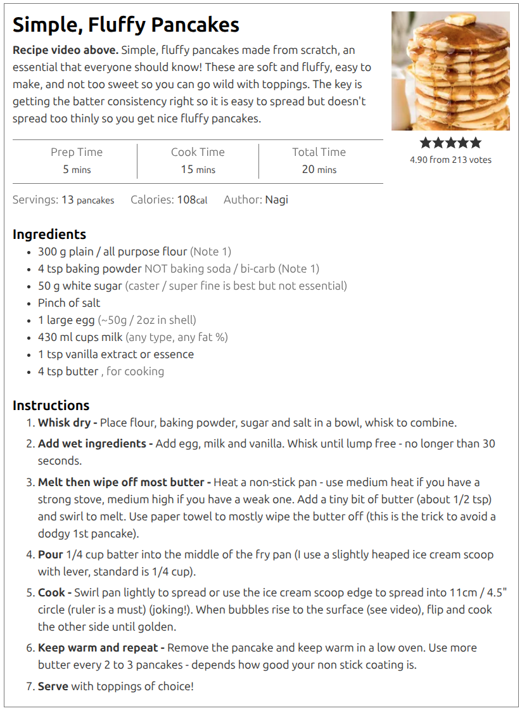

All in One View
Content from Introduction
Last updated on 2026-06-26 | Edit this page
Introduction
At this HWSA workshop, ADACS will be delivering two sessions:
- “Big data handling for reproducible workflows” (Sections 2-4) will be delivered in the first session Friday Afternoon from 1:30-3:30.
- “Workflows and reproducibility in practice” (Section 6) will be delivered on Saturday morning from 11:30-12:30.
Throughout these sessions we will be working in small groups of 3-5 people. Within your groups you’ll often be asked to discuss a topic, summarize your answers, and then use Wooclap or a shared GoogleDoc to share your answers with the class.
Challenge
Form into groups of around 4 people, making sure that you have at least one person in your group that you haven’t worked with before.
Once you have formed a group, everyone should give a 15 second intro to the group.
Background
In this workshop we will be returning to the following flow chart as an example of a generic workflow for research:
flowchart LR
accTitle: {A generic research workflow}
accDescr: {A generic research workflow with 4 main sections: obtaining data, preparing data, analyzing data, and communicating results.}
subgraph obtain ["Obtain Data"]
direction LR
a["observe"]
b["simulate"]
c["literature search"]
d["download data"]
e["..."]
end
subgraph prepare ["Prepare Data"]
direction LR
f["clean"]
g["filter"]
h["aggregate"]
i["classify"]
j["process"]
k["..."]
end
subgraph analyse ["Analyze Data"]
direction LR
l["visualise"]
m["describe"]
n["model"]
o["test hypothesis"]
p["draw conclusions"]
q["..."]
end
subgraph publish ["Communicate Results"]
direction LR
r["article / paper"]
s["methods / code"]
t["evidence / data"]
u["..."]
end
obtain --> prepare --> analyse --> publishThe workflow above is intentionally generic and hopefully you have experience in doing many of the activities described. In your research some or all of the above will be done “by hand” (that is, interactively), at least initially, using existing tools and your local machine (your laptop or work desktop).
The advent of “Big Data” in astronomy hasn’t fundamentally changed what the above workflow looks like, however it does change how each of the steps are preformed. This will be the focus of today’s workshop:
- What is big data, and how does it change how I do research?
- How can we better design, execute, and evaluate workflows?
- How do we maintain research best practice when working with big data?
Content from Big Data
Last updated on 2026-06-26 | Edit this page
Overview
Questions
- What does Big Data mean?
- What are some common barriers to working with big data?
Objectives
- Recognise that “big data” is context-dependent (size, complexity, velocity).
- Identify when your own research crosses into “big data” territory.
- Identify common technical and practical barriers (compute, storage, transfer, tooling).
- Reflect on which barriers are most relevant to your own research context.
Big Data in Astronomy: Scale, Barriers, and Implications
What is big data?
Despite the name, big data is not all about the petabytes. In fact, the “big” in big data is more about the scale of the problems caused, than the size of the data itself.
Big data begins when your normal way of working breaks.
Essentially you know you need to engage in big data thinking when your established workflows break. Sometimes the solutions require new hardware or software, but sometimes you also need to change how you think about a problem or even change the questions that you are asking. Your workflows may need changing or updating when any of the items listed in our example workflow become difficult. For example, our normal ways of working could break because:
- The data are too large to store on your local machine,
- The cleaning/filtering process takes many hours to complete,
- The data has high dimensionality or connectivity, and is difficult to summarize or visualise with existing tools,
- Your data can’t be presented as a table or image, and thus is difficult to share in a publication.
Each of these breakdowns have simple solutions with significant costs:
- You work on a subset of the available data. You get results but there is a question around generalization. Small effects and subtle features are not evident in smaller populations, and you miss potential discoveries.
- You follow “standard practice” to do a single pass data processing step. When you find errors or strange features in your processed data you employ post-hoc analysis ‘corrections’ to try and account for these features. It becomes difficult to clearly separate real features from data processing artifacts. You (and others) are less confident in your results.
- You only view/compare a few features at a time to reduce complexity. Your results are limited to correlations between the subset of feature combinations that you have decided to use. Multi-colinear relationships, or even non-linear relationships are not explored and you miss out on a deeper insight into the problem at hand.
- You present snapshots of your data in your publication, and leave a data sharing note that asks people to contact you in order to have access to the data you used. (1 year later you move institutes and loose that particular HDD).
The “solutions” above are clearly not ideal, but, sadly, they are more common than you would hope. You won’t find such honest descriptions or reasoning in most papers, but talk to someone at a conference and you’ll soon see how common these solutions are.
What actually goes wrong?
Working with big data is not just difficult, it is different. The challenge is not that tasks become slower, but that some things stop being possible altogether. The great news is that the converse is often also true - if you can solve some big data problems, you start to unlock new capabilities.
When you have big data problems the following things happen:
- You can’t open or inspect your data
- Files are too large. Data is distributed.
- You cannot “just take a look”.
- You can’t iterate quickly
- A small change might require hours or days to re-run.
- Exploration becomes expensive.
- You can’t rerun your analysis reliably
- Pipelines become complex, fragile, and hard to reproduce.
- You can’t keep everything
- Intermediate results, temporary files, and even raw data may be discarded or inaccessible.
With big data, you stop interacting with the data directly. Instead, you are interacting with the process.
Our new science workflow now looks like this:
flowchart LR;
accTitle: {Our new science workflow.}
accDescr: {An alternative science workflow consisting of data input, a fully automated workflow which out puts our results.}
A["Data"];
workflow["(Automated) Workflow"];
R["Results"];
A-->workflow-->R;We have taken two steps forward in that we now have an automated and hopefully robust and reproducible workflow that we can rely on. However we also have taken a step back in that we are now less directly working with the data at each stage.
AT20G: A big data problem without “big data”
The AT20G survey used a new wide-band correlator that enabled much faster observations by increasing bandwidth significantly. Although the total data volume was not unusually large, the project still required big data thinking because it broke existing ways of working:
- Standard calibration and imaging methods no longer worked.
- The data did not meet the assumptions of existing software, requiring new processing approaches.
- Existing tools were insufficient
- Bespoke software had to be developed to process and interpret the data.
- Observing strategies had to change
- Traditional observing methods were replaced with new techniques to handle how the data were collected.
- Results were harder to validate and communicate
- Non-standard data products made interpretation and sharing more difficult.
Common big data patterns in astronomy
Modern astronomy is a data-intensive science. In many ways astronomy is leading other domains in it’s embrace of new technologies and techniques thanks to telescopes and simulations that produce data at scales and rates that fundamentally change how research is done. Some common big data patterns that have been adopted in astronomy are:
- Streaming data (eg, time-domain astronomy)
- Data arrives continuously.
- Decisions must be made in real time.
- You cannot store everything.
- You cannot inspect everything by hand.
- Data that cannot be downloaded
- Many datasets are simply too large to move.
- Analysis happens where the data lives.
- Attach an HPC to an archive, rather than the inverse.
- Pipelines as the primary interface
- The raw data is rarely used directly.
- Complex pipelines produce calibrated ‘science ready’ data products.
- Long-lived datasets and data releases
- Results depend on which version of the data you used, and how it was processed.
- Data and software versioning becomes very important for reproducibility.
As a result we have a frequent data access pattern, where the user is far from the raw data and will often only retrieve a filtered subset of the processed data for their particular research need.
flowchart LR;
accTitle: {The increased distance between raw data and user accessible data.}
accDescr: {Users no longer have access to the most raw data products, but instead rely on a pre-processing system and online archive to access data.}
Observation --> Pipeline --> Archive --> Platform --> User;
Simulation --> Pipeline;Why this matters to you
You may not be working with petabytes of data. But you are likely already encountering the same underlying problems:
- combining multiple datasets
- re-running analyses late in your project
- scaling an approach that worked on a small sample
Big data projects
Each group has been given a selection of case studies drawn from Astronomy research past and present.
Choose a case study and:
Identify the key pressure point in this project: Where does scale, complexity, or time pressure create difficulty?
-
If nothing changes, what fails first? Choose one:
- Storage
- Compute
- Data transfer
- Visualisation
- Workflow/process
- Communication/coordination
Be prepared to justify your choice.
-
What change would you make to address this? You can change:
- The data (what is stored, reduced, or discarded)
- The workflow (timing, automation, decision-making)
- The tools (algorithms, infrastructure)
- The people/process (roles, communication)
What new trade-off does your solution introduce? (What gets worse when your fix is applied?)
Join the shared GoogleDoc, locate the tab relevant to the case study you have worked on and record your answers.
If you have time, feel free to complete the above for multiple different projects.
Content from Workflows
Last updated on 2026-06-26 | Edit this page
Overview
Questions
- What Are Workflows and Why Do They Matter?
- How Do I Design a Workflow for my Research?
Objectives
- Identify common technical and practical barriers (compute, storage, transfer, tooling).
- Reflect on which barriers are most relevant to your own research context.
- Map the key steps in your own research process as a workflow.
- Identify opportunities to structure or improve that workflow.
In the previous section we saw an example of a workflow. Essentially it was just a flow chart that describes how we do a research project. The example was very generic and high level. A more useful workflow is one that gives explicit instructions and has required inputs, tools, methodologies, and defines outputs. A good workflow should be like a recipe:

Why are we focusing on workflows? Because they help us to:
- Indentify inputs and dependencies,
- Describe / record our methodology,
- Design and improve our research methodology,
- Explore alternative hypotheses (using version control),
- Rerun our experiment in part or in whole to build trust in the process,
- Adapt our experiment to work on new inputs, or produce different outputs.
The more detailed our workflow description is, the easier it is to do each of the above. Designing a workflow is an iterative process: start at the highest level and then delve deeper as you go. Start with what you know, explore and test new ideas, and then incorporate them once validated.
Workflows (for humans)
Returning to the recipe analogy we are going to design a workflow for making breakfast. The requirements are:
- The breakfast must be enough for 2 people,
- Each person will have bacon, scrambled eggs, toast, beans, and coffee,
- A single person will be preparing the meal in a home kitchen.
In your groups, write a workflow that a person can follow.
Consider the following questions when designing your workflow:
- Is order important?
- Which tasks depend on each other, and which can be done in parallel?
- What tools and techniques are required?
When complete, write your final workflow on an A4 paper, photograph, and upload your answer to the shared GoogleDoc.
You may find the following iconography useful:
flowchart TD;
accTitle: {Some potentially useful iconography.};
accDescr: {Flow chart that demonstrats some iconography that can help standardise representations and hopefully lead to increased understanding.};
start([Start]) --> in1[/Input/];
start-->in2@{ shape: manual-input, label: "Manual Input"};
in1-->proc[Process] -->man[/Manual Process\];
in2--> sub[[Sub Process]] --> man --> c{Decision};
out[/output/];
c -->|No| man;
c -->|Yes| out;
out --> e([End]);
Workflows (for computers)
A workflow for a computer is just a script that you write that details all of the same ideas, but you are working with data as inputs, software as tools, and hardware instead of people. Ultimately what we are talking about is writing a bunch of code that embodies all the work that is being done in the workflow. This can be done in nearly any language that you choose, and there are even bespoke languages and tools designed for workflow management and orchestration.
Many people think that writing a workflow for a computer is hard and avoid it. Some common avoidant reasons are:
- “My project isn’t big or complex enough”
- “Creating a workflow would take longer than just doing it manually”
- “I’m only ever going to run this once anyway”
- “I already use a bunch of different scripts to automate my work”
- “I don’t have time to learn new tools”
- “Research is organic, I need flexibility in how I work”
- “I’ll write this all up as a proper workflow after my Thesis is complete”
One of the main reasons that people avoid creating workflows is because the cost is immediate, but the benefits are delayed. Early in your project the workflow seems like an overhead that is stifling your progress so it’s easy to abandon. However, if you embrace a workflow mindset there is a clear path to success that balances early investment with long term payoff.
Adopting a workflow mindeset
Start any project by recognising that you will eventually need to redo everything at least once, but probably many times. The most embarrassing and confidence destroying thing you can make is rerun your result and get different answers! A workflow makes the redo/retry process more robust.
For confidence in your work, you should be able to defend every decision made, and you should also be able to track where and when these decisions are made. A workflow becomes an (almost) self-documenting record of your methodology.
The most valuable resources you have is your time. Once you have figured out how a part of your research should be done, writing a script to automate it will save you time. A workflow is the ultimate automation and as such will save you time.
Research is inherently cumulative in nature. Your future projects will most likely build upon your past projects. A (modular) workflow can be modified for different inputs, outputs, or methods. This will make your subsequent projects faster to start, again saving you time.
With all the above in mind here are some recommendations to how you should approach your research workflow development:
- Start small with simple tools.
- Build a modular workflow using whatever tools make sense for each task.
- Prioritise languages/tools that have good community or peer support.
- Increase complexity only when you outgrow your current system.
In a practical sense this would look like:
- Download data manually, do some exploration by hand, and produce a filtered data set that you will use. Record what you have done in your lab notebook.
- Identify tools that will allow you to do the same work that can be used from the command line, and copy all these commands into a text file. Add comments to describe what is being done and why.
- Convert this text file of commands into a bash script. Often this
just means changing the filename / permissions, and adding a
#!line to the file. - Bonus: make the input/output filenames arguments or at least variables that are defined once and used multiple times, so that you can change these easily in the future.
- Move to the analysis stage, again starting with the manual process, then moving to a command line / automated version, and then capturing this in a script.
- Once you have a few independent scripts, you can build a workflow. This workflow can be as simple as just calling each of the other scripts in order.
- If/When you find yourself needing to change parameters/options within the scripts, consider turning the scripts into more general use tools or modules.
Workflow managers
Some useful features of a workflow manager include:
- Building of dependency between tasks to determine execution order
- Caching results so that re-running only executes tasks that have changed inputs
- Logging of actions planned, completed, and failed
- Isolating tasks to separate folders or environments to avoid interference between tasks
- Parallel execution of non-dependent tasks
- The ability to work across multiple hardware architectures
- Use of containersised tasks for easier dependency management and workflow portability
In increasing order of complexity and overheads, but also flexibility and control, we have the following options for designing and managing a workflow.
flowchart LR
accTitle: {Workflow managers in increasing order of complexity}
accDescr: {Bash, Make, Snakemake, and Nextflow are workflow managers that have an increasing level of complexty and overheads.}
Bash --> Make --> Snakemake --> Nextflow- Bash : Simply list all the commands to execute and it’s done. No bonus features, literally everything has to be written/managed by you.
- Make : Designed for workflows that have files as input/outputs (eg compiling code). User defines rules that map an input to an output, and Make will decide what needs to be done to reach a particular target output result. Caching, parallelism, and dependency tracking is built in. Syntax is clearly defined but easily forgotten creating a write only language situation.
- Snakemake : Essentially Make but with a much nicer syntax. Easier to configure/limit parallelism, tasks can be generalised more easily. Can create a directed acyclic graph (DAG, a nice workflow graph) that shows the execution plan. Has the ability to do a “dry-run” that will show the commands that would be executed without actually running them.
- Nextflow : A syntax that is similar to Snakemake but which is designed to be easily deployed across various HPC systems. Includes easily configurable use of containerisation, integration with jos schedulers like SLURM, and has a good separation of tasks via working folders. Can pass values between tasks as well as files. The all-singing all-dancing workflow manager.
- A workflow is not extra work — it is how you make your research repeatable, scalable, and understandable.
- If you can’t clearly describe your workflow (inputs, steps, outputs), you can’t reliably trust or reproduce your results.
- Workflows save time in the long run by turning ad‑hoc processes into reusable, adaptable systems.
Content from Reproducible Research
Last updated on 2026-06-26 | Edit this page
Overview
Questions
- What makes research in astronomy reproducible and reusable in practice?
- What small changes can you make now to improve the reproducibility and FAIRness of your work?
Objectives
- Describe what reproducible research looks like in an astronomy workflow.
- Explain how reproducibility supports reuse, validation, and collaboration.
- Identify a practical minimum standard for reproducible research.
- Recognise key elements of FAIR data practices in everyday work.
- Apply one concrete improvement to your own workflow.
Motivation: Why should you care about reproducible research?
Most astronomers agree that reproducible research is “a good thing”.
Few astronomers change how they work because of it.
This lesson starts by being honest about why that is — and why, despite this, reproducible practices are often worth it for you personally, especially if you are a PhD student or early‑career researcher (ECR).
We will talk briefly about benefits to science, but we will focus mainly on short‑term, selfish reasons that tend to matter more day‑to‑day.
Many of the themes of reproducibility are closely related to the concepts of FAIR (Findable / Accessible / Interoperable / Reusable) data or software.
Reproducibility is not (just) about being virtuous
You will often hear that reproducible research is important because it:
- improves trust in science
- allows others to verify your results
- makes research more reliable in the long term
All of this is true — but for many researchers, these benefits feel:
- distant
- abstract
- misaligned with immediate career pressures
Sarah Wild, in an article for physics today describes the concern many astronomers have around reproducibility and a potential erosion of trust in science. One of the issues she points out is that our current publication systems are based on “paper and letter” based communication rather than being designed to include the publication of data, methodology as code, and results.
PhDs and ECRs are usually evaluated on:
- papers
- citations
- finishing projects on time
- surviving supervisor or project changes
So let’s reframe the question: What does reproducibility do for you, right now?
Selfish reason #1: Reproducibility saves you time
Many researchers first encounter reproducibility as a burden.
In practice, the opposite is often true.
Reproducible workflows make it easier to:
- pause and restart work after months away
- recover from broken laptops or lost files
- return to a project after a supervisor, postdoc, or collaborator leaves
- debug your own results
Additionally, a reproducible workflow is easier to incorporate different/new data or new analysis techniques than a non-reproducible workflow. This means that any future projects which have some commonality with your previous projects, will have a head-start and lower barrier for entry.
For PhD students in particular, this matters because:
- projects routinely span multiple years
- interruptions are common (teaching, observing, writing, life)
- memory is unreliable, documentation is not
- future projects will likely build on your thesis work
A recurring finding in studies of early‑career researchers is that reproducible practices reduce re‑work and dead ends, even when they add a small amount of effort up front.
Remember: You are the first and most frequent reuser of your own code.
Reflection
Have you ever failed to reproduce your own result after a few months?
Use Wooclap to vote on the poll.
Selfish reason #2: Reproducible work is easier to defend
Scientific results are increasingly scrutinised after publication. When your work is questioned, reproducibility acts as protection. If you can point to:
- versioned code
- documented data
- clearly stated assumptions and limitations
then criticism becomes:
- technical, not personal
- something you can respond to, not panic about
For PhDs and ECRs, this matters because:
- you often have less institutional protection
- you are more exposed to reviewer and community criticism
- technical expectations are higher for more junior researchers
Result: Reproducibility shifts risk from “who did this?” to “what does the evidence show?”
What happens when reproducibility is missing?
Reproducibility failures are rarely dramatic at first. More often, they look like:
- results that “can’t quite be repeated”
- figures or tables that cannot be regenerated
- analyses that depend on steps no one can fully reconstruct
In astronomy research, common failure modes include:
- samples or subsets of data that cannot be regenerated
- results that depend on undocumented filtering or selection choices
- discrepancies caused by small differences in processing or calibration
- results that change when seemingly minor assumptions are corrected
In many published cases:
- no fraud was involved
- no one acted in bad faith
- the problem was simply undocumented decisions
For ECRs, the risk is asymmetric:
- the cost of failure is personal and immediate
- the benefit of cutting corners is often short‑lived
Reproducibility as career insurance
It is reasonable to think of reproducibility as a form of insurance. You invest a small amount of effort:
- documenting choices
- fixing randomness
- structuring workflows
In return, you reduce the chance of:
- losing months of work
- being unable to answer basic questions about your own results
- inheriting an unfixable mess (or becoming one)
Reproducibility is insurance you pay for up front — instead of with stress later.
Take one minute to think (no sharing required):
- What is one thing in your current workflow that only you understand?
- How confident are you that you could rerun your main result in a year?
Practical takeaways for astronomers
Reproducibility and FAIR practices can feel abstract until they are translated into concrete actions. We will focus on practical minimum standards that astronomers can apply immediately, without rewriting their entire workflow or becoming software engineers. The goal is not perfection. The goal is for our work to be clear, honest, and reusable enough.
A minimum reproducibility standard
For most astronomy projects, a reasonable minimum standard is that:
- you can rerun your own main result
- someone else could rerun it with effort, but without guessing
- limitations are stated explicitly
In practice, this usually means having:
- versioned code or scripts
- recorded configuration choices or parameters
- well-defined datasets or sample selection criteria
- documented processing or analysis steps
- a short description of scope and limitations
Anything beyond this is a bonus.
What to document (even if you share nothing else)
If you only document a few things, make them these:
-
Data provenance
- Where the data came from, including archive, release, selection or observation criteria, and any random seeds.
-
Preprocessing steps
- What was done to the data before analysis, including filtering, calibration, transformations, and any derived quantities
-
Key assumptions and choices
- Any decisions that affect the result, such as parameter values, selection thresholds, or analysis settings.
-
Scope and limitations
- What the analysis was designed to do, and where the results may not apply.
This information is often more important than low-level implementation details.
Rule of thumb: Documentation that answers questions is more useful than documentation that looks complete.
FAIR does not require new infrastructure
Many astronomers assume FAIR practices require:
- specialised repositories
- complex metadata schemas
- institutional support
In reality, small steps already help a lot. For example the following metadata are a good start:
- a README.md in a Git repository
- a data dictionary for derived features
- a short “how to reproduce Figure 3” note
- a software dependency paragraph in the paper
FAIRness improves through clarity, not tooling.
When full openness is not possible
Sometimes you cannot share:
- proprietary data
- sensitive observations
- intermediate products
- large files
This does not prevent reproducibility or FAIR alignment. You can still:
- describe access conditions
- share code or methods without data
- provide illustrative examples or mock data
- document the full workflow
Silence is the only irreproducible option.
Reuse is where most harm (and benefit) happens
Most problems arise after publication, when:
- analyses are reused on new datasets
- catalogues are treated as ground truth
- assumptions are forgotten
You cannot control all reuse. You can influence it by:
- writing clear limitations
- choosing careful language
- making uncertainty visible
This protects both downstream users and your future self.
A sustainable mindset
Good practice accumulates. Most reproducible workflows were not built all at once. They evolved because:
- small habits stuck
- mistakes were documented
- clarity was rewarded
Progress is incremental!
- Reproducible research makes your work easier to understand, reuse, and extend.
- Small, well-documented steps can significantly improve reproducibility and FAIRness.
- Clear documentation is more valuable than detailed but incomplete records.
- FAIR practices are about clarity and accessibility, not complex infrastructure.
- Improving reproducibility is incremental: consistency matters more than perfection.
Content from Interlude
Last updated on 2026-06-26 | Edit this page
Overview
Questions
- What are we doing next time?
Objectives
- Recap lessons so far and prepare for next time.
Interlude
Today we focused on recognising when big data changes the way research needs to be done.
Next session we will focus on practical changes:
- documenting data provenance
- writing a useful README
- choosing workflow tools
- identifying one improvement you can apply immediately
- Your facilitators will be here for all of the HWSA
- Feel free to discuss further questions from our workshops
- We are also available to chat about software / hardware questions you might have that relate to your research
Content from Workflows and Reproducibility in Practice
Last updated on 2026-06-30 | Edit this page
Overview
Questions
- How do pancakes help me with my research?
Objectives
- Create some take-away actions that are directly relevant to your research.
Workflows and Reproducibility in Practice: small changes you can make today
In the previous session, we saw that:
- big data changes how research is done
- workflows help manage complexity
- reproducibility makes results trustworthy
In this session, we will focus on a different question: > What small changes can you make to your own research this week?
Diagnosing your current workflow
Most workflows fail in predictable ways. Common weak points include:
- Data selection is undocumented
- Preprocessing steps are unclear
- Parameters are not recorded
- Results depend on manual steps
- Outputs cannot be regenerated
Where will this break?
(Individually or in small groups) Think about your current or recent project. Answer:
- What step would be hardest to repeat?
- What step do only you fully understand?
- What would fail if you revisited this in 6 months?
Record your answers in your log book as this will be useful for you to refer to when you are back in the office.
Manual work to workflow
Very few (probably zero) research projects start by building a workflow. In reality, projects evolve from a mostly manual proof of concept to a semi-automated MVP, and only eventually become a fully automated (and documented) workflow. In fact most projects don’t even make it that far! Despite all our motivational talk about workflows and reproducibility, there is no rule that says you have to build an automated workflow. It just happens that when your project complexity reaches a certain point, you will find yourself better off if you have one.
The typical progression of a workflow is as follows:
- Manual exploration
- Copy commands into a file
- Turn into a script
- Link scripts together
- Add structure (workflow)
The pragmatic approach here is to only add structure when it will benefit your project, and when the cost/benefit of implementation is in your favour. Another pragmatic approach is:
Use simple tools that work, until they don’t
A workflow only matters when you need to rerun or trust your results.
What to document
You do not need to document everything.
Focus on the parts that would stop you from rerunning your work:
- Data sources and versions
- Key preprocessing steps
- Important parameters
- Decisions and assumptions
Document decisions (the “why”), not just actions (the “what”).
A fairly natural place to look for documentation in a project is a
README(.md) file.
The five‑minute README
Imagine someone opens your project folder in a year (it might even be you). Write down the headings of a README that would help them.
You do not need to write the content now. Just the headings are enough.
Use Wooclap to record your headings, and vote for others.
One concrete improvement
Think about your current or next project. Identify one thing you could improve:
- Add a README
- Record a data source
- Fix a random seed
- Document a filtering step
- Script a manual process
Write it down and commit to doing that one thing. Share your goals with a colleague so you are more likely to work on them (it works!).
Final Note
You do not need:
- perfect workflows
- complex tools
- full automation
You do need:
- clarity
- consistency
- small, repeatable improvements
Your final challenge
(Individually or in small groups)
- Sketch your current workflow
- Identify one unclear or fragile step
- Define one change that would improve it
- Repeat 2-3 as needed
- Don’t let the perfect be the enemy of done.
- Your future self is your most important collaborator.